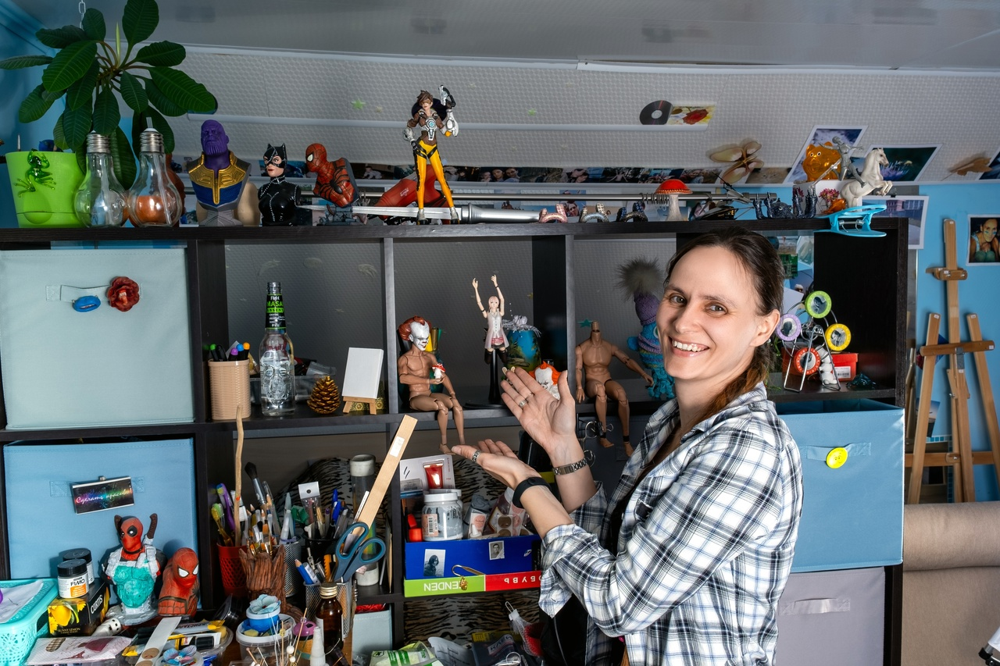
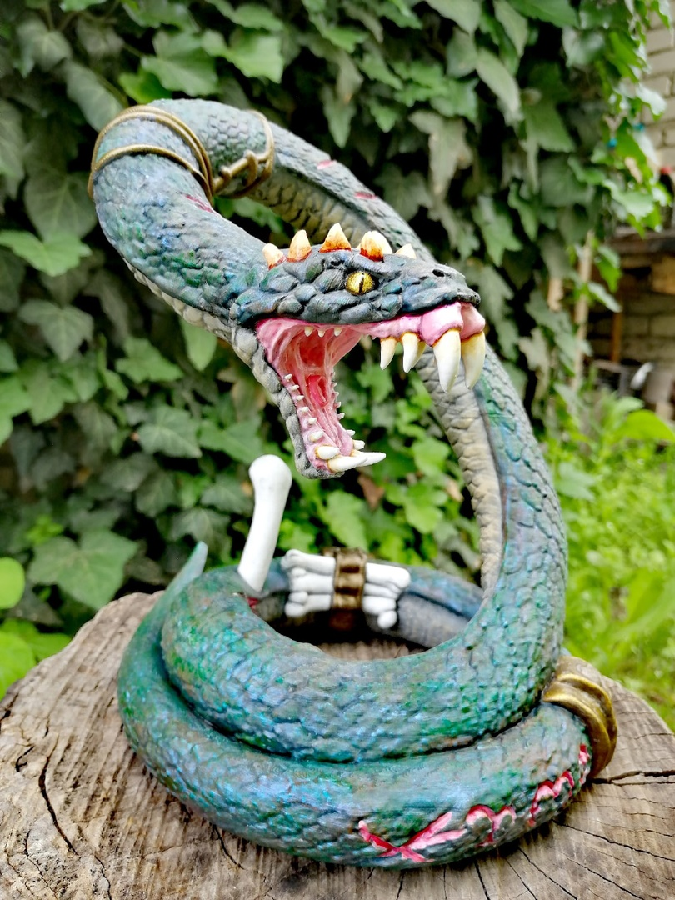
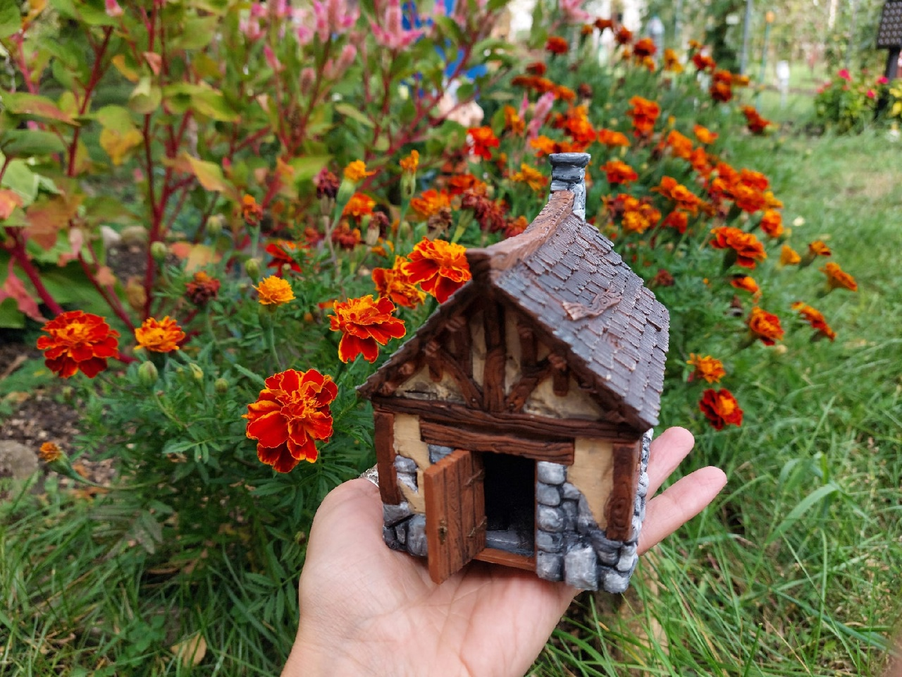
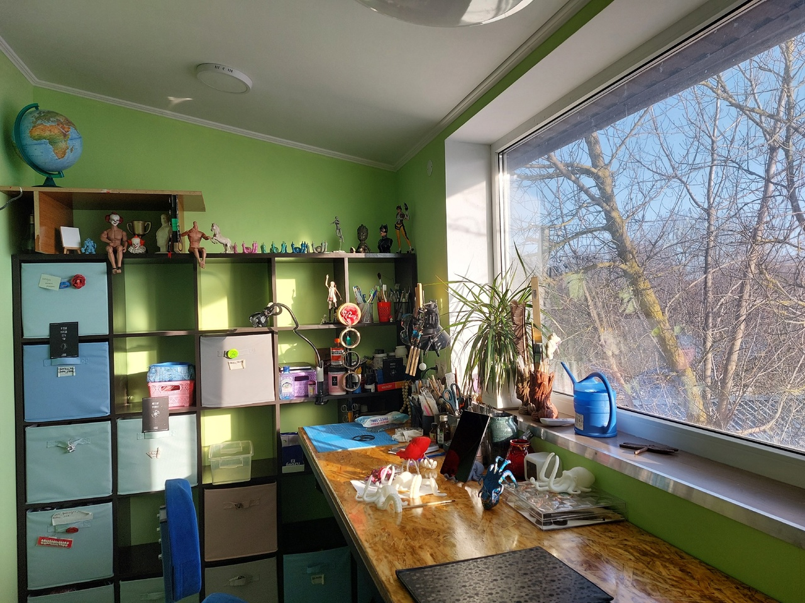
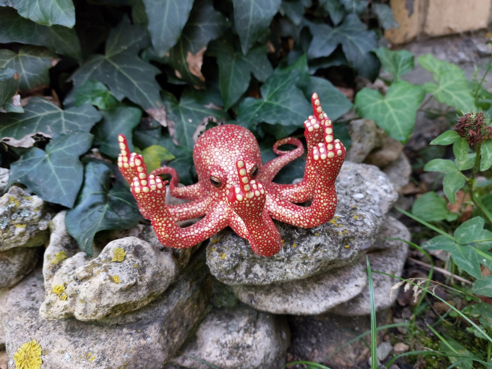

Моя ученица Ольга Икс долго не могла приобрести курс, так как банк не одобрял ей рассрочку из-за низких доходов. Но Ольга искала выход и нашла возможность оплатить кусочек стоимости. Отдала долг с первых уроков, вышла в + и начала зарабатывать по 900 тысяч в год на изделиях 3D печати без рекламы. Историю Ольги читайте в нашем с ней интервью.

Мы взяли у нее короткое интервью:
— Расскажи, что было до курса, какой средний доход был в месяц? Сколько клиентов?
— До курса я уже год, как была в свободном плавании (уволилась с работы, которая жрала мое здоровье. Зарплата-то была хорошей, но вся она уходила на поддержание моего здоровья, лечения зубов, которые посыпались от стресса).
Муж тогда сказал: "Увольняйся! Мне нужна жена и мама для сына, а не привидение, которое приходит домой, чтобы поспать. Занимайся чем хочешь, но чтобы тебе было комфортно."
Я, после увольнения, восстанавливала свое здоровье, и предавалась творческим утехам). Клиентов у меня было весьма мало - раз-два и обчелся. Но, зато родные и близкие всегда были одарены моим рукоблудием по праздникам). По деньгам от клиентов - сейчас смотрю свою таблицу доходов и смешно становится. "Сказочные доходы" - 5 тыщ, а то и меньше было в месяц.
— Проходила обучение самостоятельно или с куратором? Уроки были понятными, подробными? Поддержку Клуба и куратора можешь рекомендовать другим ученикам?
— Для начала я скажу, что мне на обучение Яндекс не хотел давать кредит))
Он сказал, что у меня слишком нищебродские доходы. Я поведала об этом Евгении и она предложила мне сначала заплатить маленький кусочек, а остальное - по прохождению 5 (или 6 - уже не помню) уроков.
Я у тетушки заняла эту денежку)

Пройдя первые уроки, я уже заработала достаточно денег, чтобы оплатить все обучение. И отдать долг тетушке!)
Обучение по началу проходила с куратором. Все шло гладко пока не случился ковид. С великой самоизоляцией. Когда ребенок перестал ходить в детский сад, а муж стал работать на удаленке.
Об уединении для обучения теперь можно было только мечтать. Но таки я смогла оформить свою страничку и группу в ВК. Даже дошла до рекламы.
Но, я ее так ни разу и не запускала. Блок с рекламой до сих пор не пройден))
Потому что мне с головой хватило той информации, что входит в блок с оформлением и той литературы, что рекомендуется к прочтению. Теперь зная все основы привлечения - можно на любой площадке раздобыть клиентов. Хоть на Авито, хоть на Озоне, хоть в ВК, хоть в Яндекс.услугах.
Уроки были абсолютно понятными.
Шик, блеск!
Мне нравится манера подачи, с юморком и на пальцах.
Куратор... Ну, либо я слишком офигенно делала, что куратору и нечего было вставить, либо девушка была немного другого уровня. Как таковой куратор мне и не нужен был.
Я больше отдачи получала от чата. И да, первыми же заказчиками у меня стали именно участники клуба – в чат я скидывала выполненные задания и буквально сразу с кем-то из чата мы списывались по поводу заказа или коллаборации.

Вообще, кому-то действительно нужна помощь куратора, тут от человека сильно зависит. Как от самого ученика, так и от самого куратора. Ведь если ученик - социофобушек, то ему действительно нужны особые пендели.
Я отошла от повествования, как я проходила курс) И почему я до сих пор его не прошла.
20-ый год, ковидло. Летом истекла поддержка куратора, но я один фиг не могла учиться, т.к. ребенок был дома и тишина для обучения - мне могла только сниться. Пришла осень и первый класс. Тут тоже понятно - школьные уроки, уроки, уроки... Да еще и на дистанционку постоянно отправляли. А для первоклассника это значит что? Что мама все будет объяснять.
Так докувыркались до конца осени. У меня заболевает папа. Я мчу к родителям в Сибирь. Папа умирает. Хороним его. Я остаюсь переделывать кучу дел и помогать маме - почти до конца года. Потом забираю маму и везу ее в Ставрополь. Опять в режиме белки - мамы-первоклассника.
Доживаем до лета (ура, каникулы!) и опять в Сибирь. Наследственные дела, перевезти мамины вещи. В Ставрополе купить уже наконец маме свое жилье. Сделать там ремонт своими силами, справить новоселье... Вот и 2021 год пролетел...
И в 2021 году мы сами с мужем уже свой дом начинаем строить (до сих пор строимся, но уже хотя бы какое-то окончание видно, по-крайней мере, в 2024 году уже новоселье планируем)
И всё параллельно ведётся - с ребенком учеба (со 2-го по 4-ый класс включительно у него вторая смена, что жутко неудобно) и его секции, моя работа над заказами, строительство дома и прочее-прочее-прочее... Ну и параллельно пожирательство мною литературы по саморазвитию.
Не забываем еще про событие, которое нельзя называть, которое закрыло мне мой зарубежный магазин, пришлось переобуваться в воздухе и работать только с Россией.
За все это время, (как я прошла курс без блока рекламы, а чисто на базовых знаниях из начальных уроков), какие итоги могу подвести?
У меня размножился парк 3D-принтеров (если я начинала с одного, то число их выросло до 7).
У меня 4 разных помещения под мои мастерские и оборудование;

Приобретен лазерный станок, к которому я еще и приобрела огромную базу векторных рисунков для резки (с упоением крашу самостоятельно нарезанные заготовки для значков/магнитов/брелков).
Из спальни, где у меня был стол для моего рукоблудия, я перетащила все в отдельную мастерскую и полностью все там оборудовала, как мне нужно (закупила крутые санкционные краски, разжилась компрессором с аэрографом и прочими художественными радостями)
Ну и про строительство дома - помним, да?)
— Какие сейчас действия делаешь для привлечения клиентов? Как часто пишешь посты? Запускаешь ли рекламу?
— По действиям сейчас - особо ничего не предпринимаю, каких-то телодвижений, чтобы прям жопу рвать о себе заявлять...
Во-первых, у меня оформленная страничка в ВК и группа с фоточками, чего делаю. Еще есть оформленная страничка на Яндекс.услугах (можно и на Авито выложиться, но там аудитория в большинстве - неадекватная, я с такой не хочу работать. Предпочитаю, сарафан, который сам ко мне тащит заказчиков).
Во-вторых, самая теплая (даже горячая аудитория) - это друзья в ВК и контакты в WhatsApp. WhatsApp - это вообще горячие пирожки - в статус выкладываешь, что натворила и народ уже стучится с деньгами - хочу! хочу! хочу!
Еще, т.к. у меня творческие порывы и клевые товары, я открыла магазин на Озон. Это вообще отдельная сказка - общаться с заказчиком не надо, люди просто выбирают из наличия, что им нравится. Я же просто им это отправляю.
Посты на личной странице пишу по настроению и то, что я хочу. В группе выкладываю, если образовалось окошко и я вспомнила, что я что-то не показала.
Приправляю все это так, как Суровые учили ))) Оно уже в крови.
— А вот из такого, чего раньше не могла себе позволить, а сейчас можешь?
— О, ну дык, расширение ) закупка оборудования, материалов, какие хочу. Обустройство помещения, чтобы отделиться нафиг) Вкидывание в стройку, машину супругу купили, я в спонтанное путешествие моталась. Ну это, конечно, все мы с супругом вдвоем зарабатываем). Раньше мне у мужа приходилось денег просить на свои какие-то расходы. А теперь у меня деньга есть, мужу подкидываю, если ему вдруг нужно.
Осенью я вообще - на чисто свои заработанные укатила на 10 дней в Крым)
Спонтанная поездка образовалась и я не трогая семейный бюджет укатила. Для меня это прям достижение, я скажу))
О ещё забыла, я ж начала себе одежду покупать, какую хочу и обувь. И начала выделять денежку каждый месяц на то, что очень давно хотела. На лазерную эпиляцию))))
— Океюшки, ну и давай последним вопросом подшлифуем. Что по деньгам сейчас, сколько зарабатываешь в месяц? Сколько в год?
— Короче, по циферкам сейчас сама офигела.
В этот год доход посмотрела - почти 900 тр (это без вычетов всяких налогов и сопутствующих деятельности расходов, но всё равно впечатляет!). Это что приношу я своей деятельностью и пассивным доходом.
Чисто если смотреть в разрезе только по деятельности, выключив пассивный доход (повторюсь, я не рву жопу, чтобы заработать все миллионы) - в разный месяц по-разному выходит, т.к. могу за месяц и почти сотку т.р заработать или где-то месяц прошарахаться, не рождая какой-то продукт (отпуск там, например, или с упоением работа на стройке, или какое-то обучение - бывает сама иногда преподаю), то "средняя температура по больнице" выходит 30 тыр (потому что в году я несколько месяцев могу филонить (если это так можно назвать) по деятельности)

В этом году, у меня 4 месяца "филонства" вышло.
— Дашь напутствие будущим ученикам? И тем кто сомневается идти иль нет?
— Люди, не идите учиться! Вы не будете знать, куда деньги девать!!!
На самом деле - очень полезны и само обучение и клуб. В клубе ты находишь как поддержку, так и общение с такими же как и ты ребятами-ремесленниками (и даже эти же ребята становятся твоими клиентами) и можно мутить крутые коллаборации.
А основы основ, чему обучает Евгения Брун, – дают огромные возможности уметь существовать, процветать на любой площадке! Просто неважно, где, оно всё работает одинаково. Собаку съешь на этом и всё, ты впереди.
Несомненно, реклама в ВК даст огромные потоки заказчиков, но именно мне это не нужно (а то я просто напросто выйду в окно) У меня своя ситуация, со своими сложностями, но я ни разу не пожалела, что я покупала обучение у Суровых.
У меня теперь куча друзей ремесленников по всей стране, я всегда могу удивить своих близких подарками ручной работы из любой сферы! Вот недавно, мужу подарила набор кованных каминных причандалов - из клуба Суровых кузнец, у него заказала). Кожаный кошелёк, лосины, труселя, футболки, кофты, украшения из полимерной глины, вышивка лентами, цветы из фоамирана, украшения из стали... Чего я только не заказаывала у ребят-ремесленников)))
Евгения Брун объединяет))
Напутствие ученикам какое?) Всё в ваших руках) будете учиться - и всё будет чики-пуки. Обучение окупается на раз-два и потом стабильность. Когда ты не терзаешься по поводу того, что нечего жрать, а точно знаешь, что ты легко можешь заработать.
Стоит только слегка пошевелить пальцем левой ноги. Но это потом, а сначала напрячься и усвоить материал. Если не усвоить, то тыква так и останется тыквой, так никогда и не превратившись в карету
— Уууух, спасибо большое))) по-моему очень классно получилось. Тебе – всего-всего, теперь ты точно знаешь чего))) Процветай!
— Пасяба, ух, как я процвету! Бойтесь все)))